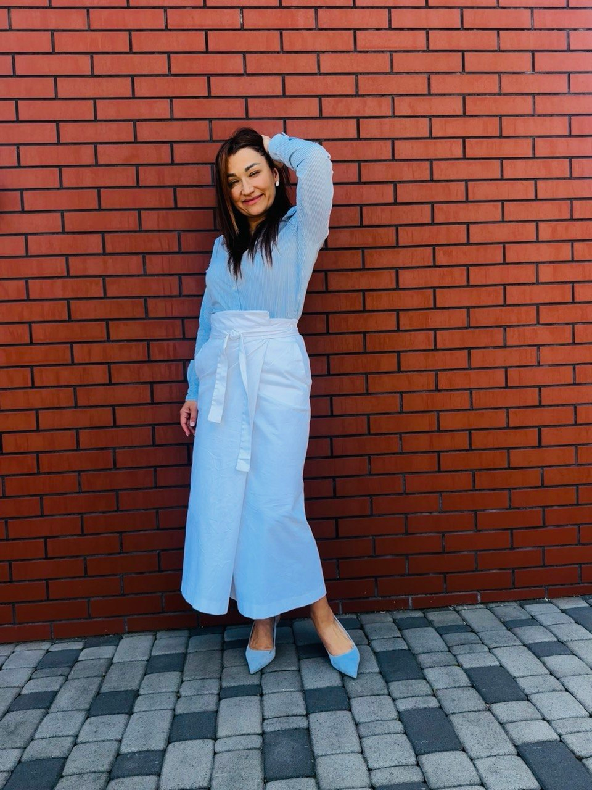

Допомагаю підліткам і дорослим визначити покликання через Метод Кар'єрного Компаса — без тестів з інтернету та загальних порад. I help teenagers and adults discover their calling through the Career Compass Method — no generic internet tests, no vague advice.

Метод Кар'єрного Компаса адаптований під різний вік і ситуацію.The Career Compass Method is tailored to your age and situation.
Вступаєш до університету, але не знаєш куди? Разом знайдемо твої сильні сторони й справжні інтереси.Applying to university but unsure where? Together we'll find your strengths and real interests.
Відчуваєш вигорання або хочеш змінити сферу? Зміна кар'єри — це не криза, це точка зростання.Feeling burned out or want to pivot? Career change isn't a crisis — it's a growth point.
Батьки підлітків — окремий формат «Батьки + Підліток»: спільна сесія без конфліктівParents of teens — special format «Parent + Teen»: a joint session without conflict
Авторська система, що об'єднує японську філософію Ікігай та SWOT-аналіз особистості.An original system combining Japanese Ikigai philosophy with personal SWOT analysis.
Сильні сторони, зони росту, можливості та перешкоди — не бізнесу, а саме тебе.Strengths, growth zones, opportunities and obstacles — yours, not a business's.
Перетин між тим, що любиш, вмієш, що потрібно світу та що приносить дохід.The intersection of what you love, what you're good at, what the world needs, and what pays.
Унікальний вектор — де твій потенціал зустрічається з ринком та покликанням.Your unique vector — where your potential meets the market and your calling.
Персональна карта напрямку з конкретними кроками — твоя дорожня карта.Your personal direction map with concrete next steps — your roadmap.
Все починається з безкоштовного знайомства. В кожному пакеті є базова частина і персональний бонус — під твою конкретну ситуацію.It all starts with a free intro call. Every package includes a core part and a personal bonus tailored to your situation.
30 хвилин, де ми розбираємо твою ситуацію і визначаємо, який формат роботи підійде найкраще.30 minutes to analyze your situation and decide which format suits you best.
30 хвилин · онлайн30 minutes · online
Інтерактивний PDF для самостійної роботи з методикою. Шаблони, сітки, 50 питань для саморефлексії.An interactive PDF for working through the method on your own. Templates, grids, 50 reflection questions.
Глибока індивідуальна сесія: SWOT + Ікігай + персональна карта + план дій. Плюс персональний бонус під твій запит.Deep individual session: SWOT + Ikigai + personal map + action plan. Plus a personalised bonus for your situation.
3 сесії з супроводом до першого результату. Все з пакету «Кар'єрний Компас» — плюс реальна допомога зі запуском.3 sessions with support until your first result. Everything in the Compass package — plus real help launching.
Не знаєш що обрати? Починай з безкоштовної консультації — разом визначимось.Not sure which to choose? Start with the free call — we'll figure it out together.
6 питань → персональна рекомендація → WhatsApp6 questions → personal recommendation → WhatsApp
6 питань → персональна рекомендація → WhatsApp з готовим запитом6 questions → personal recommendation → WhatsApp with a ready message
Також запросимо на безкоштовну консультаціюWe'll also invite you to a free consultation
Я знаю, що таке — не розуміти, чого ти хочеш. Я пройшла через 12 кардинально різних сфер. І саме це дало мені унікальне бачення.I know what it's like to not know what you want. I've gone through 12 radically different fields. That's exactly what gave me a unique perspective.
Коли у 2022 році я залишилась в Україні, почала пакувати гуманітарку і координувати допомогу. Поступово волонтерство переросло в місію.When I stayed in Ukraine in 2022, I started packing humanitarian aid and coordinating support. Gradually, volunteering became a mission.
Метод Кар'єрного Компаса народився з одного питання, яке мені ставили роками: «Як зрозуміти, чого я справді хочу?»The Career Compass Method was born from one question people kept asking me for years: "How do I figure out what I truly want?"
У мене РДУГ — і це справді суперсила. Дружина військового. Директор. Коуч. Волонтер. Мандрівниця. І це одна людина.I have ADHD — and it's genuinely a superpower. Wife of a soldier. Director. Coach. Volunteer. Traveller. All one person.
Допомагаю українцям вступити до університетів Великобританії безкоштовно за програмою Homes for Ukraine. Це не я навчалась у Великобританії — я допомагаю вступити туди тобі.I help Ukrainians apply to UK universities for free through the Homes for Ukraine programme. I didn't study in the UK — I help you get there.
Дізнатись докладнішеFind out more →Консультація: оцінюємо ситуацію та підходящі програмиConsultation: we assess your situation and suitable programmes
Підготовка документів і подача заявки в університетDocument preparation and university application
Підтримка на всіх етапах — від вибору до офераSupport at every stage — from choosing to receiving an offer
Підготовка до переїзду та адаптаціїPreparation for the move and settling in
«Я 3 роки не могла вирішити, куди вступати. Після сесії з Ірою все стало на своє місце. Вона не нав'язала думку — допомогла почути саму себе.»"For 3 years I couldn't decide where to apply. After a session with Ira, everything fell into place. She didn't impose her opinion — she helped me hear myself."
«10 років в маркетингу, і я повністю вигоріла. Після роботи з Ірою не просто знайшла новий напрямок — відчула себе собою знову.»"10 years in marketing and I completely burned out. After working with Ira I didn't just find a new direction — I felt like myself again."
«Ми з сином прийшли разом. Формат "Батьки + Підліток" просто ідеальний. Перший раз говорили про його майбутнє без конфліктів.»"My son and I came together. The Parent + Teen format is simply perfect. For the first time we talked about his future without conflict."
Починаємо з безкоштовної 30-хвилинної консультації. Без зобов'язань — просто розберемось разом.We start with a free 30-minute consultation. No commitment — just figure it out together.